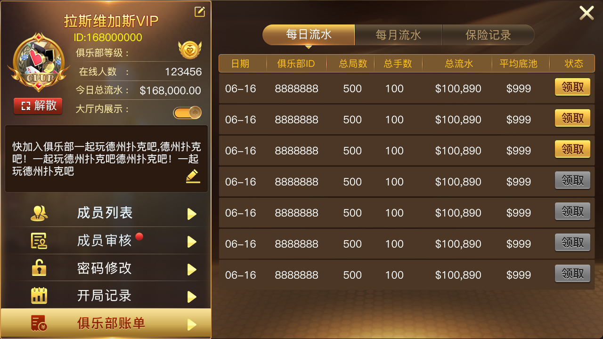

行動產品
資料面向 iOS、Android 與 H5，完整客戶端工程需核對交付物。
以真實行動端截圖及公開 C++/Tars 檔案說明德州撲克產品、線上狀態、訊息推送和房間服務。
行動端德州撲克原始碼：C++與Tars推送、使用者狀態、房間上報、俱樂部請求、多玩法介紹及真實手機介面。
資料面向 iOS、Android 與 H5，完整客戶端工程需核對交付物。
使用者線上、遊戲狀態、房間位址和牌桌資訊由服務模組管理。
經典德州、奧馬哈、短牌、大菠蘿、AOF、SNG 和 MTT。
圖片來自線上 README 的現有產品資料，不是示意圖。

| 訊息推送 | PushServant.tars、PushServantImp、PushServer |
|---|---|
| 使用者狀態 | UserStateProto.tars、UserStateProcessor |
| 俱樂部請求 | audit_club、change_club_balance、change_club_fund |
| 房間狀態 | 房間使用者、線上人數、牌桌資訊和遊戲位址上報 |
| 建置與設定 | makefile、道具/獎勵/排行榜設定模型 |
公開倉庫是有限程式碼快照；完整行動客戶端、資料庫、營運後台及玩法須以授權交付清單為準。